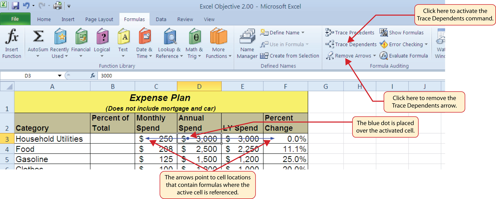

This section reviews the fundamental skills for entering formulas into an Excel worksheet. The objective used for this chapter is the construction of a personal cash budget. Most financial advisors recommend that all households construct and maintain a personal budget to achieve and maintain strong financial health. Organizing and maintaining a personal budget is a skill you can practice at any point in your life. Whether you are managing your expenses during college or maintaining the finances of a family of four, a personal budget can be a vital tool when making financial decisions. Excel can make managing your money a fun and rewarding exercise.
Figure 2.1 "Completed Personal Cash Budget Workbook" shows the completed workbook that will be demonstrated in this chapter. Notice that this workbook contains four worksheets. The first worksheet, Budget Summary, contains formulas that utilize or reference the data in the other three worksheets. As a result, the Budget Summary worksheet serves as an overview of the data that was entered and calculated in the other three worksheets of the workbook.
Figure 2.1 Completed Personal Cash Budget Workbook

Follow-along file: Excel Objective 2.00
FormulasUsed to calculate a variety of mathematical outputs in Excel and can be used to create virtually any custom calculation required for your objective. are used to calculate a variety of mathematical outputs in Excel and can be used to create virtually any custom calculation required for your objective. Furthermore, when constructing a formula in Excel, you use cell locations that, when added to a formula, become cell referencesCell addresses used in formulas. Excel references the values entered into the cell locations used in formulas to produce outputs. When the values are changed in a cell referenced by a formula, Excel automatically produces new outputs. When a cell reference is used by itself in a cell location (cell address preceded by an equal sign [=]), Excel displays the value entered into that cell location.. This means that Excel uses, or references, the number entered into the cell location when calculating a mathematical output. As a result, when the numbers in the cell references are changed, Excel automatically produces a new output. This is what gives Excel the ability to create a variety of what-if scenarios, which will be explained later in the chapter.
To demonstrate the construction of a basic formula, we will begin working on the Budget Detail worksheet in the Personal Budget workbook, which is shown in Figure 2.2 "Budget Detail Worksheet". To complete this worksheet, we will add several formulas and functions. Table 2.1 "Spend Category Definitions" provides definitions for each of the spend categories listed in the range A3:A11. When you develop a personal budget, these categories are defined on the basis of how you spend your money. It is likely that every person could have different categories or define the same categories differently. Therefore, it is important to review the definitions in Table 2.1 "Spend Category Definitions" to understand how we are defining these categories before proceeding.
Figure 2.2 Budget Detail Worksheet
Table 2.1 Spend Category Definitions
| Category | Definition |
|---|---|
| Household Utilities | Money spent on electricity, heat, and water and on cable, phone, and Internet access |
| Food | Money spent on groceries, toiletries, and related items |
| Gasoline | Money spent on fuel for automobiles |
| Clothes | Money spent on clothes, shoes, and accessories |
| Insurance | Money spent on homeowner’s or automobile insurance |
| Taxes | Money spent on school and property taxes (this example of the personal budget assumes that we own property). |
| Entertainment | Money spent on entertainment, including dining out, movie and theater tickets, parties, and so on |
| Vacation | Money spent on vacations |
| Miscellaneous | Includes any other spending categories, such as textbooks, software, journals, school or work supplies, and so on |
The first formula that we will add to the Budget Detail worksheet will calculate the Monthly Spend values. The formula will be constructed so that it takes the values in the Annual Spend column and divides them by 12. This will show how much money will be spent per month for each of the categories listed in Column A. The following explains how this formula is created:
Table 2.2 Excel Mathematical Operators
| Symbol | Operation |
|---|---|
| + | Addition |
| − | Subtraction |
| / | Division |
| * | Multiplication |
| ^ | Power/Exponent |
Use Cell References
Cell references enable Excel to dynamically produce new outputs when one or more inputs in the referenced cells are changed. Cell references also allow you to trace how outputs are being calculated in a formula. As a result, you should never use a calculator to determine a mathematical output and type it into the cell location of a worksheet. Doing so eliminates Excel’s cell-referencing benefits as well as your ability to trace a formula to determine how outputs are being produced.
Figure 2.3 "Adding a Formula to a Worksheet" shows how the formula appears in cell C3 before you press the ENTER key. Figure 2.4 "Formula Output for Monthly Spend" shows the output of the formula after you press the ENTER key. The monthly spend for Household Utilities is $250 because the formula is taking the Annual Spend in cell D3 and dividing it by 12. If the value in cell D3 is changed, the formula automatically produces a new output. We are calculating the spend per month for each category because people often get paid and are billed for these items on a monthly basis. This formula allows you to compare your monthly income to your monthly bills to determine whether you have enough income to pay these expenses.
Figure 2.3 Adding a Formula to a Worksheet
Figure 2.4 Formula Output for Monthly Spend

Use Universal Constants
If you are using constants, or numerical values, in an Excel formula, they should be universal constants that do not change, such as the number of days in a week, weeks in a year, and so on. Do not type the values that exist in cell locations into an Excel formula. This will eliminate Excel’s cell-referencing benefits, which means if the value in the cell location you are using in a formula is changed, Excel will not be able to produce a new output.
Follow-along file: Continue with Excel Objective 2.00. (Use file Excel Objective 2.01 if starting here.)
Once a formula is typed into a worksheet, it can be copied and pasted to other cell locations. For example, Figure 2.4 "Formula Output for Monthly Spend" shows the output of the formula that was entered into cell C3. However, this calculation needs to be performed for the rest of the cell locations in Column C. Since we used the D3 cell reference in the formula, Excel automatically adjusts that cell reference when the formula is copied and pasted into the rest of the cell locations in the column. This is called relative referencingExcel automatically adjusts a cell reference used in a formula or function relative to its original location when it is pasted into new cell locations. and is demonstrated as follows:
Figure 2.5 "Relative Reference Example" shows the outputs added to the rest of the cell locations in the Monthly Spend column. For each row, the formula takes the value in the Annual Spend column and divides it by 12. You will also see that cell D6 has been double clicked to show the formula. Notice that Excel automatically changed the original cell reference of D3 to D6. This is the result of relative referencing, which means Excel automatically adjusts a cell reference relative to its original location when it is pasted into new cell locations. In this example, the formula was pasted into eight cell locations below the original cell location. As a result, Excel increased the row number of the original cell reference by a value of one for each row it was pasted into.
Figure 2.5 Relative Reference Example
Use Relative Referencing
Relative referencing is a convenient feature in Excel. When you use cell references in a formula, Excel automatically adjusts the cell references when the formula is pasted into new cell locations. If this feature were not available, you would have to manually retype the formula when you want the same calculation applied to other cell locations in a column or row.
Follow-along file: Continue with Excel Objective 2.00. (Use file Excel Objective 2.02 if starting here.)
The next formula to be added to the Personal Budget workbook is the percent change over last year. This formula determines the difference between the values in the LY (Last Year) Spend column and shows the difference in terms of a percentage. This requires that the order of mathematical operations be controlled to get an accurate result. Table 2.3 "Standard Order of Mathematical Operations" shows the standard order of operations for a typical formula. To change the order of operations shown in the table, we use parentheses to process certain mathematical calculations first. This formula is added to the worksheet as follows:
Table 2.3 Standard Order of Mathematical Operations
| Symbol | Order |
|---|---|
| ^ | First: Excel executes any exponential computations first. |
| * or / | Second: Excel performs any multiplication or division computations second. When there are multiple instances of these computations in a formula, they are executed in order from left to right. |
| + or − | Third: Excel performs any addition or subtraction computations third. When there are multiple instances of these computations in a formula, they are executed in order from left to right. |
| ( ) | Override Standard Order: Any mathematical computations placed in parentheses are performed first and override the standard order of operations. If there are layers of parentheses used in a formula, Excel computes the innermost parentheses first and the outermost parentheses last. |
Figure 2.6 "Adding the Percent Change Formula" shows the formula that was added to the Budget Detail worksheet to calculate the percent change in spending. The parentheses were added to this formula to control the order of operations. Any mathematical computations placed in parentheses are executed first before the standard order of mathematical operations (see Table 2.3 "Standard Order of Mathematical Operations"). In this case, if parentheses were not used, Excel would produce an erroneous result for this worksheet.
Figure 2.6 Adding the Percent Change Formula
Figure 2.7 "Removing the Parentheses from the Percent Change Formula" shows the result of the percent change formula if the parentheses are removed. The formula produces a result of a 299900% increase. Since there is no change between the LY spend and the budget Annual Spend, the result should be 0%. However, without the parentheses, Excel is following the standard order of operations. This means the value in cell E3 will be divided by E3 first (3,000/3,000), which is 1. Then, the value of 1 will be subtracted from the value in cell D3 (3,000−1), which is 2,999. Since cell F3 is formatted as a percentage, Excel expresses the output as an increase of 299900%.
Figure 2.7 Removing the Parentheses from the Percent Change Formula
Does the Output of Your Formula Make Sense?
It is important to note that the accuracy of the output produced by a formula depends on how it is constructed. Therefore, always check the result of your formula to see whether it makes sense with data in your worksheet. As shown in Figure 2.7 "Removing the Parentheses from the Percent Change Formula", a poorly constructed formula can give you an inaccurate result. In other words, you can see that there is no change between the Annual Spend and LY Spend for Household Utilities. Therefore, the result of the formula should be 0%. However, since the parentheses were removed in this case, the formula is clearly producing an erroneous result.
Follow-along file: Continue with Excel Objective 2.00. (Use file Excel Objective 2.03 if starting here.)
Excel provides a few tools that you can use to review the formulas entered into a worksheet. For example, instead of showing the outputs for the formulas used in a worksheet, you can have Excel show the formula as it was entered in the cell locations. This is demonstrated as follows:
Figure 2.8 "Show Formulas Command" shows the Budget Detail worksheet after activating the Show Values command in the Formulas tab of the Ribbon. As shown in the figure, this command allows you to view and check all the formulas in a worksheet without having to click each cell individually. After activating this command, the column widths in your worksheet increase significantly. The column widths were adjusted for the worksheet shown in Figure 2.8 "Show Formulas Command" so all columns can be seen. The column widths return to their previous width when the Show Formulas command is deactivated.
Figure 2.8 Show Formulas Command

Show Formulas
Two other tools in the Formula Auditing group of commands are the Trace Precedents and Trace Dependents commands. These commands are used to trace the cell references used in a formula. The Trace Dependents command shows where any given cell is referenced in a formula. The Trace Precedents command shows what cells have been referenced in a formula that exists in an activated cell. The following is a demonstration of these commands:
Figure 2.9 "Trace Dependents Example" shows the Trace Dependents arrow on the Budget Detail worksheet. The blue dot represents the activated cell. The arrows indicate where the cell is referenced in formulas.
Figure 2.9 Trace Dependents Example
Figure 2.10 "Trace Precedents Example" shows the Trace Precedents arrow on the Budget Detail worksheet. The blue dots on this arrow indicate the cells that are referenced in the formula contained in the activated cell. The arrow is pointing to the activated cell location that contains the formula.
Figure 2.10 Trace Precedents Example
Which of the following terms best describes how Excel is able to change the outputs of formulas and functions when one or more inputs are changed?
Which of the following best describes the proper use of numbers when constructing formulas in Excel?
Which of the following will be calculated first in the formula =((C10−D2)*A9)+B5*C5?
Which of the following formula auditing features would you use if you wanted to see where a specific cell location was referenced in formulas entered into a worksheet?